История на автобусния транспорт
За разлика от другите видове транспорт, автобусите навлизат по-късно за обслужване на пътническия градски транспорт на София.
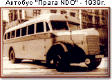На 20 април 1935 г. е пусната в експлоатация първата автобусна линия в София. По-късно са открити още шест линии с обща дължина 23 км. Подвижния състав на този вид транспорт бил представен от 10 автобуса "Прага". До 1940 г. са доставени 10 броя автобуси "МАН" и 6 броя "Мерцедес".
По време на войната една част от автомобилите са унищожени от бомбардировките, а други са спрени от движение поради липса на резервни части. През 1944 г.,1945 г. и 1946 г. автобусният превоз се осъществява с наличните 8 коли.През 1949 г. е построено първото автобусно депо "Христо Михайлов" за 60 броя автобуси. По същото време се доставят и 15 автобуса "ЛАЗ", производство на Лвовски автомобилен завод. През 1950 г. се извършва доставка от Чехия на 11 метрови автобуси "Шкода РТО".
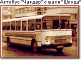През месец януари 1952 г. се създава Стопанско предприятие (СП) "Софийски автотранспорт", на директно подчинение на Софийска община, в което влизат товарният транспорт (състоящ се предимно от автомобили "ЗИС" и "ЗИС- пят"), автобусите и таксиметровите автомобили.
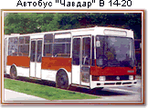На 22.06.1959 г. СП "Софийски автотранспорт" влиза в състава на СП "Градски пътнически транспорт" до 01.07.1964 г., когато става самостоятелно звено "Клон-2" към същото стопанско предприятие. От 1964 г. започва производство на автобуси на завод "Чавдар" в Ботевград. През 1968 г. се доставя и първият съчленен "Икарус 180" и първият съчленен "Чавдар В 14-20". През 1974г. са внесени първите 100 бр. съчленени автобуси "Икарус 280" от Унгария.
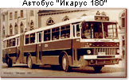Ежегодно нарастват превозните възможности на градския автобусен транспорт. Докато през 1965 г. в състава няма нито един съчленен автобус, към 01.01.1988 г. те са вече 872 броя.
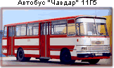През 1969 г. започва доставка на нов тип автобуси "Чавдар 11 Г5", производство на завод "Чавдар" Ботевград.
За периода 1980 г. - 1988 г. са доставени общо 919 съчленени автобуси и 478 единични, които подменят амортизирани и бракувани автобуси. От 01.07.1987 г. се обособяват три самостоятелни автобусни предприятия: Автобусно поделение (АП)-1 "Земляне", АП-2 "Малашевци", АП-3 "Дружба". През 1989 г. тези предприятия се преобразуват в общински фирми. От 1990г. се създава и четвърта общинска фирма за автобусен транспорт ФАТ-4 "Република". В началото на 1993 г. четирите общински фирми влизат в състава на новосъздаденото ЕООД Столична компания за градски транспорт.
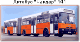За последните пет години са доставени нови модерни автобуси: 1996 г. - 30 броя "Чавдар 141" - съчленени,производство на завода в Ботевград с МАН - агрегати.
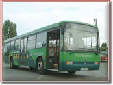За последните десет години е подменена голяма част от остарелите автобуси "Икарус" и "Чавдар" с автобуси "Мерцедес" втора употреба, в много добро техническо състояние.
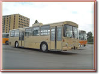Закупуват се и нови автобуси през: 1998 г. - 41 броя "Мерцедес 345" - съчленени и 21 броя "МАН" - единични. 1999 г. - 30 броя "МАН 262" - съчленени. 2000 г. - 6 броя "Мерцедес 0345" - единични. От 19.05.1998г. се създава СКГТ - Автотранспорт - ЕАД, което от 08.12.1999г. е самостоятелно Акционерно дружество. От декември 2002 г. структурата се променя, като се обособява самостоятелно ЕАД - Столичен Автотранспорт. Към 2002 г. СКГТ - Автотранспорт - АД е извършил превоз на пътници по 95 линии с обща дължина 1210 км. По линиите работят 463 автобуса. Към 2006 г. автотранспорта е извършил превоз на пътници по 94 линии с обща дължина 2380 км. По линиите работят 554 автобуса. Шестнадесет броя линии се обслужват от фирми по "Закона за обществените поръчки".
Ако искате да разберете какъв е подвижния състав към днешна дата, посетете ,,Подвижен състав".
История на тролейбусния транспорт
В сравнение с трамвайния транспорт , тролейбусният транспорт се развива по-късно. Неговото начало се поставя на 14 февруари 1941 г. с откриването на първата тролейбусна линия от спирка "Горнобански път" до Горна баня. Дължината на линията е 3,3 км, като е обслужвана само от два тролейбуса.
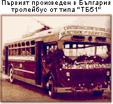Функционирането на тролейбусния транспорт до края на на Втората световна война е затруднено от различни причини; като основните са войната и невъзможността да се доставят части от чужбина за поддържане на подвижния състав, нови тролейбуси за неговото увеличаване, електрическата мрежа. Така откритата тролейбусна линия се запазва в този си вид до 1947 г., когато тролейбусния транспорт с бързи темпове започва да се развива с доставката на 10 бр. тролейбуси "МТБ-82" от СССР. На 01.01.1952 г. е пуснато в експлоатация новопостроеното депо "Сточна гара" с капацитет 60 тролейбуса. През 1951 г. е усвоено българско производство на тролейбуси от типа "ТБ-51" ("МТБ-82"). През 1961 г. се пуска в експлоатация депо "Надежда" с капацитет 100 тролейбуса. От 1964 г. се доставят чешки тролейбуси "Шкода -9Тр" , с контакторно управление.
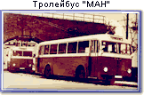През 1986 г. са доставени 12 бр. съчленени тролейбуси "МАН" - втора употреба. През следващите години тролейбусния парк е типизиран изцяло с тролейбуси "Шкода-9ТрН" с тиристорно управление.
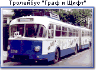За периода 1980 г.-1989 г. са внесени следните марки и бройки тролейбуси:1984 г. - 20 бр. "Шкода 14 Тр"-единични, нови с импулсно управление с тиристорен преобразовател; 1985 г. - 18 бр. "Граф и Щифт" - втора употреба с контакторно управление. В 1987 г. са сглобени в завода "Чавдар" в Ботевград - 25 бр. "ДАК - Чавдар" с механична част, изработена в Румъния на базата на автобус "В 1420" и управление с български електронен тиристорен регулатор. От 1985 г. до 1988 г. са доставени 151 бр. нови тролейбуси "Икарус 280Т" - съчленени - с импулсно управление и 70 бр. "ЗиУ 682" - контакторно управление. Тъй като капацитетът на съществуващото депо "Надежда" се изчерпва, през 1987г. се построява депо "Искър" с капацитет 130 бр. тролейбуси, а през 1994г. влиза в експлоатация стоянка "Левски" с капацитет 60 бр. тролейбуси. През 1994г. във фирма "ТРАМКАР" е произведен 1 бр. тролейбус "ТК-130" с електронно контакторно управление, който е пуснат в редовна експлоатация през 1997 г.
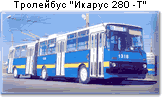Към 2002 год. тролейбусният транспорт извършва превоз на пътници по 10 линии с обща дължина 105,5 км. В делнични дни работят 111 тролейбуса , обслужвани от 220 водачи. Развитието на тролейбусния парк съпътства изграждането на тролейбусната мрежа, общата дължина на която е 257 км. Към 2006 год. тролейбусният транспорт извършва превоз на пътници по 9 линии с обща дължина 193 км. В делнични дни работят 102 тролейбуса.
Ако искате да разберете какъв е подвижния състав към днешна дата, посетете ,,Подвижен състав".
История на софийския трамвай
В края на 19 век в София се появява конският омнибус с постоянно действащи линии от Гурковския площад (площад "Света Неделя") до Гарата, Горна баня и Княжево, който софиянци наричали трамвай.
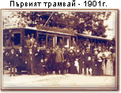Историята на електрическия трамвай датира от 01.12.1898 г., когато общината отдава Концесия за снабдяване на града с електрическа енергия и построяване на трамвайни линии на френското дружество "Марсилия" и на анонимното белгийско дружество "Електрически трамваи". На 01.01.1901 г. тържествено е открито движението на трамваите в София, с 25 мотриси и 10 ремаркета, по 6 трамвайни маршрута с обща дължина на линиите 23 км единичен коловоз. Междурелсието е 1000 mm. София посреща новия ХХ век с изградена трамвайна мрежа със следните линии: От гарата през Шарения (Лъвовия) мост до днешния площад "Славейков".
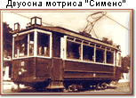Първите трамвайни вагони са малки, двуосни, с два мотора по 18 kW и открити платформи, заградени с метални решетки. Салонът е разделен на първа и втора класа. Ремаркетата са открити, като пътниците се качват и слизат отстрани, а кондукторът ги обикаля по специална пътека - стъпало. С увеличаването на пътниците през 1908 г. се доставят нови трамваи: "Сименс"-двуосни мотриси-12 броя, разделени на две класи и 6 четириосни мотриси "Цепелин" с два мотора по 33 kW. През 1916г. Столичната община започва процедура по отнемане от белгийското дружество на експлоатацията на трамваите, като окончателното прехвърляне на предприятието продължава до 18.02.1927г. По решение на Софийската община от 1916 г. предприятието се обособява като Дирекция на трамваите и осветлението (ДТО) с два отдела "Трамваи" и "Осветление", начело с директор и двама началници на отдели: "Трамваи" и "Осветление".
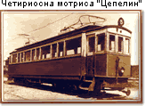От 1927 г. отдел "Трамваи" се разделя на две отделения: "Движение" и "Техническа работилница". Тази форма на управление се запазва до края на 1948г., когато отдел "Осветление", се отделя и към общината се създава СП (Стопанско предприятие) "Софийски градски пътнически транспорт" - трамваи, тролейбуси и автобуси. През 1927 г. е организирана и обзаведена "Главна техническа работилница" на територията на депо "Мария Луиза". Тази година - 1927 г. се приема годината на създаването на предприятие за ремонт, възстановяване и преустройство на трамвайни мотриси и ремаркета. От 1924 г. до 1938 г. , когато са доставени последните трамваи от внос трамвайните линии се обслужват от: двуосни мотриси с каросерия от Рингхоферовите заводи в Прага ; двуосни мотриси серия с кошове от "Франко-Белге" и електрическа част от австрийският клон на ВВС ; четириосни с кошове от "Ателие металуржик дьо Нивел" и с електрическа част от АСЕС ; ремаркета "Енерги" от Белгия ; мотриси с изцяло желязна конструкция , производство на МАН - ЕАГ; мотриси от МАН - Сименс , ремаркета с една средна врата , от фабриките "Юрдинген и Вегман" ; мотриси от фабриката "Ернесто Бреда - Милано", с електрическа част от "Ансалдо Марелли".
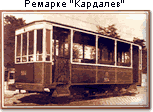На базата на натрупания опит от ремонт, като са използвани шасита на бракувани трамваи, през 1931 г. под ръководството на инж. Кардалев се произвеждат първите български ремаркета, а през 1935 г. са били построени изцяло 12 ремаркета. През 1934 г. в депо "Красно село" се изгражда модерна за времето си просторна и светла сграда, където след края на Втората световна война се премества Главната техническа работилница. 1936г. започва производството на първите български двуосни трамвайни мотриси с вносни контролери и мотори. В края на 1951г. техническата работилница се обособява като самостоятелен завод.
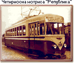През 1952 г. СП "Градски пътнически транспорт" се разделя на две предприятия: СП "Софийски автотранспорт" и СП "Софийски градски електротранспорт". В 1956 г. дейността по ремонта на трамваите и тролейбусите се поема от СП "Софийски градски електротранспорт". През 1959г. експлоатационните транспортни предприятия се обединяват под наименованието СП "Градски пътнически транспорт", а от 01.07.1964 г. "Електротранспорт" се обособява като клон 1 на Стопанско предприятие "Градски транспорт". По наша конструктивна разработка през 1951 г., са построени първите четириосни български мотриси тип "Република". От тогава в трамвайния завод до сега са произведени следните типове мотриси: през 1959г. четириосна мотриса "Комсомолец" ; през 1961 г. съчленена шестосна мотриса "Космонавт" ; през 1965г. трамвай "София" - едносъчленен, а на 01.05.1970г. "София 70" - двойносъчленен ; в 1979г. "София 100" - едносъчленен; а през 1981г., по случай 1300-годишнината от създаването на българската държава, трамвай "България 1300" , двойно-съчленен, осемосен.
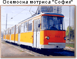Следващите години, отчитайки недостатъците на тези трамваи, започва подготовка за изграждане на нов тип конструкция с карданно задвижване и през 1986 г. първата трамвайна мотриса тип "Т6М-700" е пусната в експлоатация. На базата на този трамвай през 1987 г. започва производството на мотриси за междурелсие 1435 мм - тип "Т6МД - 1000". От 01.07.1987 г. СП "Електротранспорт" се разделя на няколко предприятия: Трамваен транспорт, Тролейбусен транспорт, Трансенерго, Трансремонтстрой и Въжени линии. През 1987 г. се открива ново трамвайно депо "Искър" за междурелсие 1435мм и е пусната в експлоатация първата трамвайна линия за това междурелсие . През 1989 г. се внасят 37 броя чешки трамваи тип "Т6В5". За периода 1990-1991 г. са внесени 40 броя чешки трамваи тип "Т6А2" - 1009 мм. Същата година, на базата на едносъчленен "Т6М-700М", е произведен един двойно-съчленен трамвай "Т8М-900", след което е спряно производството на български трамваи.
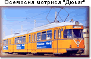През 1995г. е пусната новата трамвайна линия №22 от квартал "Изток" до "Младежки театър", за което са внесени от Германия 29 броя трамваи, втора употреба "Дюваг". През 1998г. започва модернизиране на трамваите "Т6М - 700М".От месец декември 1999г. започва производството на трамваи "Т8М-900" с частично нисък под и променен външен дизайн. През месец януари 2000 г. са внесени от Германия два броя трамваи "Т4D", втора употреба. От месец април 2000 г. са пуснати в експлоатация 17 броя чешки трамваи, нов модернизиран тип "Т6А2-БГ" , а от юли 2001 г. 16 броя трамваи, втора употреба "Т4D". Непосредствено с увеличаване на трамвайния парк продължава и изграждането на трамвайната мрежа. Общата дължина на релсовия път в 1944г. е 79,3 км единичен коловоз. В периода до края на втората световна война е изградена основата на сега съществуващата трамвайна мрежа в София.
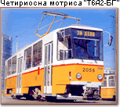От 19.05.1998г. се създава СКГТ - Електротранспорт - ЕАД, което от 08.12.1999г. е самостоятелно Акционерно дружество, което управлява трамвайния и тролейбусния транспорт на гр. София. От декември 2002 г. структурата се променя, като се обособява самостоятелно ЕАД - Столичен Електротранспорт. Към 2002г. трамвайният транспорт е извършил превоз на пътници по 16 линии с обща дължина 221 км. единичен коловоз със средна експлоатационна скорост 13,8км/ч. В делничен ден работят общо 190 трамвая, обслужвани от 380 водачи.Към 2006г. трамвайният транспорт е извършил превоз на пътници по 17 линии с обща дължина 308 км. единичен коловоз със средна експлоатационна скорост 12,56км/ч. В делничен ден работят общо 176 трамвая.
Ако искате да разберете какъв е подвижния състав към днешна дата, посетете ,,Подвижен състав".
История на метрото
Софийското метро е първото и единствено метро в България. Въведено е в експлоатация на 28 януари 1998 г. Към 20 юли 2016 г. има обща дължина 40 km с 35 метростанции. Метрото е обявено за национален обект, което означава, че неговото строителство се финансира както от общинския, така и от националния бюджет, а също и от европейски фондове.
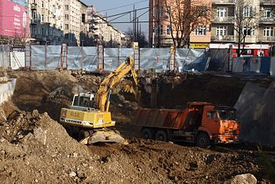Първите проучвания и планове за строителство на подземен транспорт в столицата са осъществени в края на 1960-те години. Първите строителни работи започват на 6 март 1978 г. по най-натоварената линия в ж.к. „Люлин“, като започва изграждането на „Първи метродиаметър“ – от ж.к. „Люлин“ до пл. „Независимост“ с метростанции „Вардар“ и „Люлин“. Във връзка със строителството на НДК и оформянето на околното пространство, в периода 1980 – 1981 г. е проектирана и изградена техническа инфраструктура за „Втори метродиаметър“.
Тежката финансова криза от края на 1980-те и началото на 1990-те години силно затруднява изграждането на метрополитена, пусковите срокове неколкократно са отлагани. Активните строителни дейности са възобновени след 1995 г. През 2004 г. започва подготовката, а през 2005 г. – и строителство на продължението на Първи метродиаметър през центъра на града от пл. „Независимост“ до „Интерпред“ в кв. „Изгрев“ с нов участък от 4,8 km и 3 метростанции.
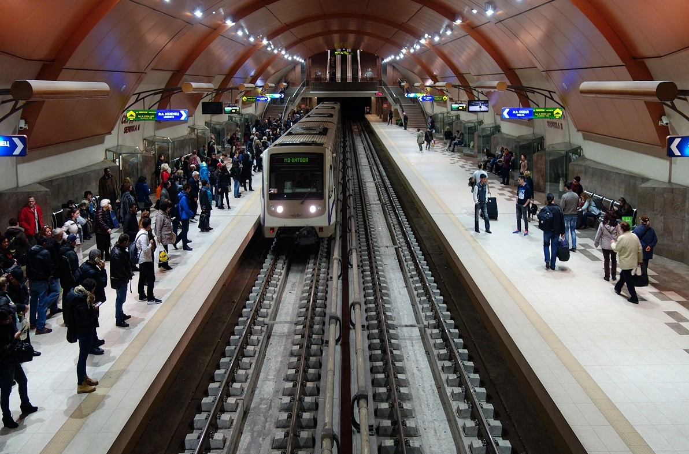На 28 януари 1998 г. е въведен в експлоатация първият участък от първия радиус на „Първи метродиаметър“ с 5 метростанции и дължина 6,5 km. В експлоатация влизат метростанциите „Сливница“, „Люлин“, „Западен парк“, „Вардар“ и „Константин Величков“. На 17 септември 1999 г. е въведена в експлоатация метростанция „Опълченска“.На 31 октомври 2000 г. е въведена в експлоатация метростанция „Сердика“, като общата дължина на трасето на първия метрорадиус е 8,1 km със 7 метростанции.На 20 април 2003 г. е въведена в експлоатация метростанция „Обеля“, като действащият участък се свързва с ж.к. „Обеля“ с нов участък от 1,8 km, като с това първият радиус е изграден.
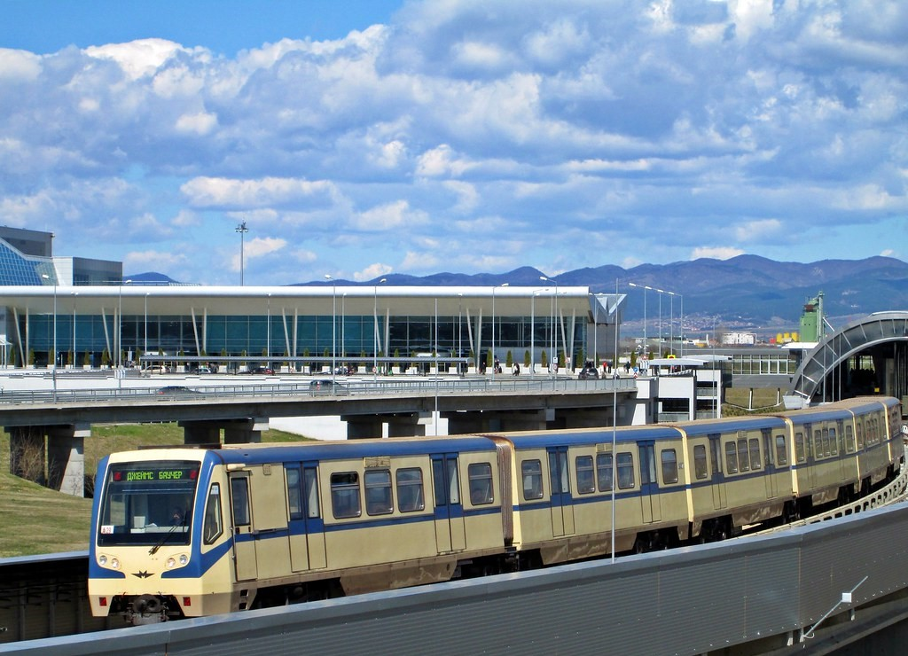На 8 май 2009 г. е въведен в експлоатация нов радиус от Първи метродиаметър с дължина 5,7 km и 5 метростанции. В експлоатация влизат метростанциите: „Стадион „Васил Левски“, „Жолио Кюри“, „Г. М. Димитров“, „Мусагеница“ и „Младост 1“. Метростанция „СУ „Св. Климент Охридски“ не е пусната в експлоатация, връзката с действащия радиус се осъществява по северния тунел. Няколко месеца двата радиуса на „Първи метродиаметър“ действат автономно. На 7 септември 2009 г. двата радиуса са съединени и е открито непрекъснато движение по цялата линия.
На 8 септември 2009 г. на официална церемония, в присъствието на японския посланик, е открита метростанция „СУ „Св. Климент Охридски“. На 25 април 2012 г. на официална церемония, в присъствието на председателя на Европейския съвет Херман ван Ромпой, са открити метростанциите „Цариградско шосе“ и „Младост 3“. На 31 август 2012 г. на официална церемония, в присъствието на председателя на Европейската комисия Жозе Мануел Барозу, е пуснат в експлоатация втори метродиаметър с дължина 13 km и 11 метростанции.
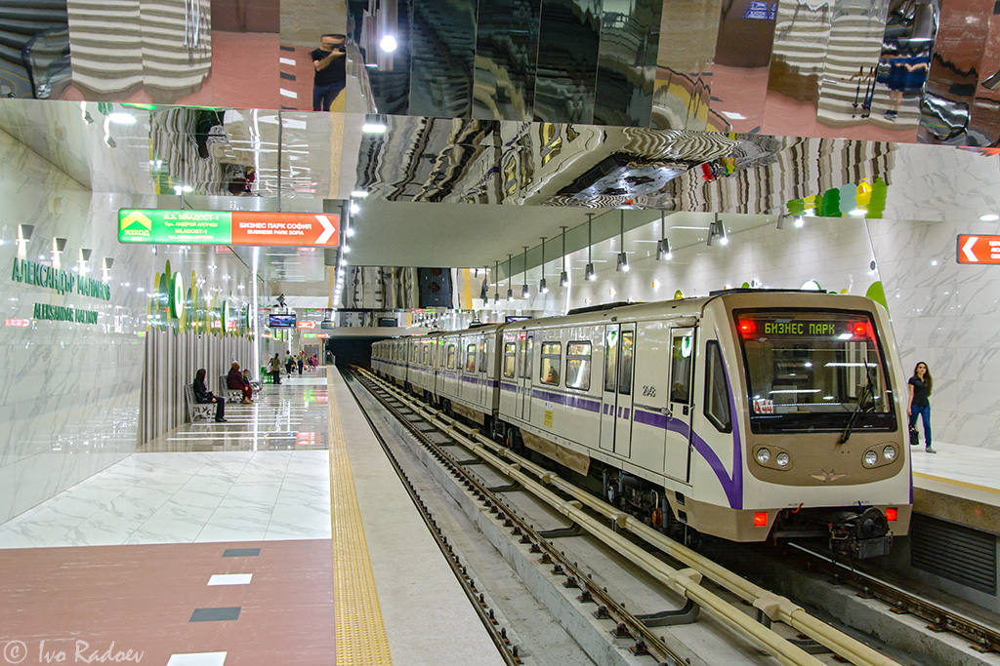На 2 април 2015 г. на официална церемония, в присъствието на премиера Бойко Борисов, кмета на София Йорданка Фандъкова, министъра на транспорта Ивайло Московски, министъра на регионалното развитие и благоустройството Лиляна Павлова и министъра на околната среда и водите Ивелина Василева, е открит северният лъч на „Първи метродиаметър“ с 4 нови метростанции: „Дружба“, „Искърско шосе“, „Софийска Света гора“ и „Летище София“. На 8 май 2015 г. на официална церемония, в присъствието на вицепрезидента на ЕК Кристалина Георгиева, президента Росен Плевнелиев, министър-председателя Бойко Борисов, кмета на София Йорданка Фандъкова, е открит южният лъч на „Първи метродиаметър“ с 3 метростанции: „Александър Малинов“, „Академик Александър Теодоров – Балан“ и „Бизнес парк София“. На 20 юли 2016 г. на официална церемония, е открита Метростанция „Витоша“.
Ако искате да разберете какъв е подвижния състав към днешна дата, посетете ,,Подвижен състав".